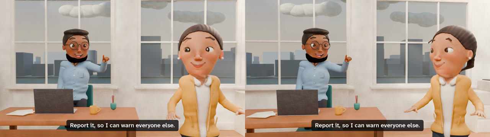
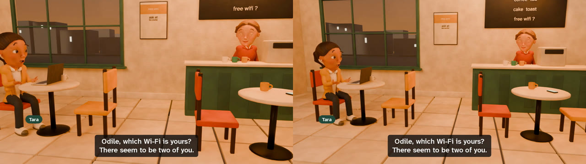
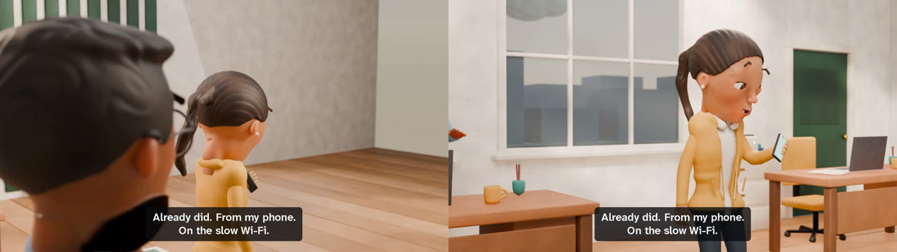
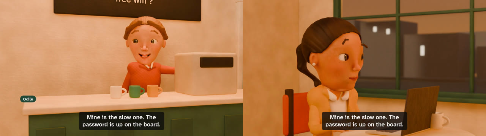
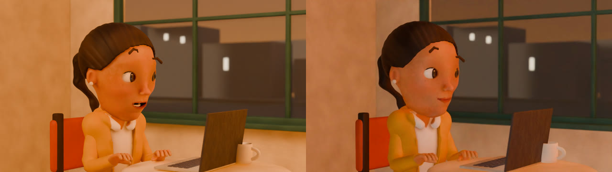
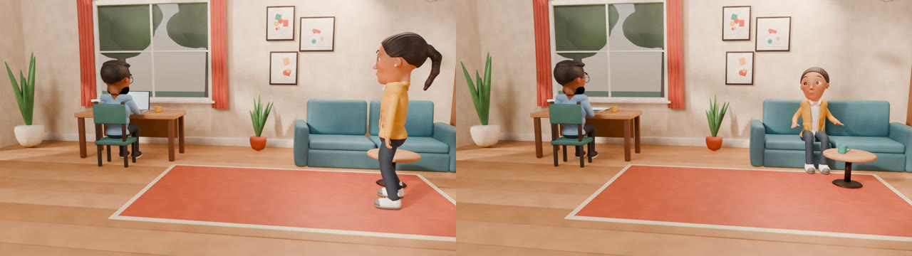
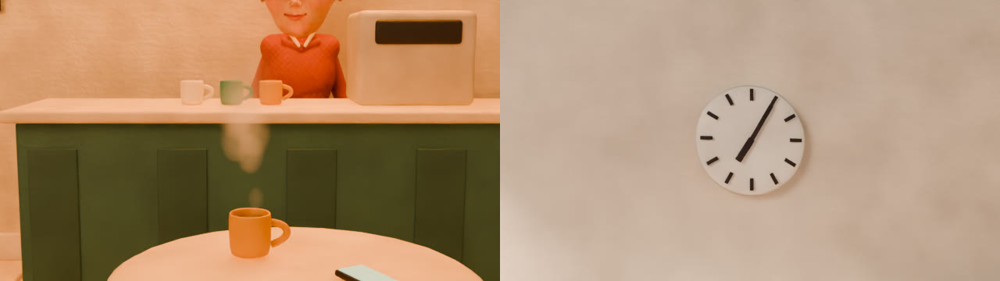

The Fast One
A clay stop-motion short made by Clayvoyant and its clay engine, Sultan, from two scene files and one page of character descriptions. Nobody opened Blender, drew anything or recorded a voice.
Seventeen filmed shots, thirteen voiced lines. Made with sastudio film examples/the-fast-one --preset preview in 55 minutes on a laptop GeForce GTX 1660 Ti.
Where Clayvoyant began
I first made a 29-minute clay stop-motion film to teach information security at my father's workplace. It was hard to build: I had to join many tools together, work around the limits of my hardware, and write my own pipeline to sculpt, animate, voice, light and film every scene.
Nobody making an awareness or classroom film should have to rebuild all of that, or spend a paid video-generation quota on every scene. So I turned what I built into Clayvoyant and made it open source. You write the people, their lines and the places in a few text files; it sculpts the cast, builds the set, directs the cameras, voices the lines and puts the film together on your own computer.
It still needs Python, FFmpeg and, for clay, Blender, and rendering takes time: The Fast One took 55 minutes on a laptop graphics card. What it saves you is the patchwork of tools, and with the free voices there is nothing to pay per film.
7 days. One laptop. A GTX 1660 Ti with 6GB VRAM and 7.7GB usable RAM.
— Ibrahim Sultan (@Ibrahimsultan__) November 10, 2026
41,562 frames. 28 minutes, 51 seconds.
Been working nonstop with opus 5.5 max on a clay-style stop motion film about Information Security Management and it's finally finished.
The idea was to create… https://t.co/iyL3YVG1Go pic.twitter.com/49i99ubw8n
What went into the original, and what Clayvoyant does now
The original: Blender for the clay; Remotion and FFmpeg for compositing and the edit; Sarvam Bulbul and ElevenLabs for the voices; Mixkit music and sound effects; Poly Haven models and textures and Pexels footage for the rain; lettering from an alphabet I drew in code; Earshot to check the sound; and AI-assisted engineering throughout. I also tried Tripo3D and BlenderKit for models, but neither made it into the final film.
Clayvoyant:
- Clay characters sculpted from a short description, no two alike.
- Faces that act, hands with fingers, and gestures.
- Eight reusable sets, lighting moods, and a planner that directs the cameras.
- Lip sync, subtitles, and one film per language.
- Kokoro voices, free and local; Sarvam or ElevenLabs with your own key.
- Only what you change is filmed again, and a stopped render picks up where it left off.
- Quicker drawn films without Blender, phone videos and printable posters.
What changed, frame by frame
Each pair is two real renders of the same moment: on the left before a fix, on the right after it.




Things a scene file can ask for

direction.light: the preset on the left, a low warm key from camera right on the right.
direction.props: Bashir's laptop closes as Tara arrives.
direction.dressing: [steam] and direction.clock: "07:05".